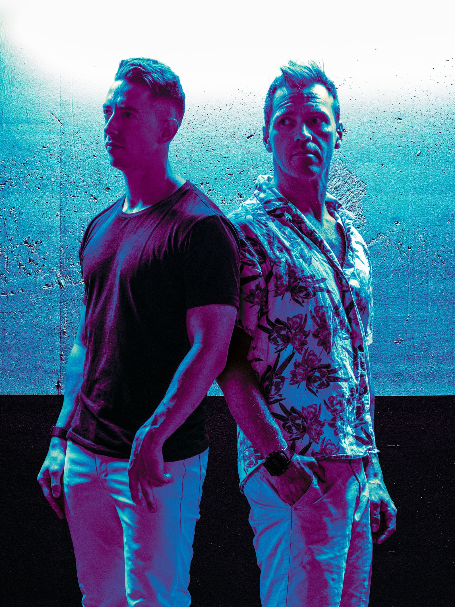
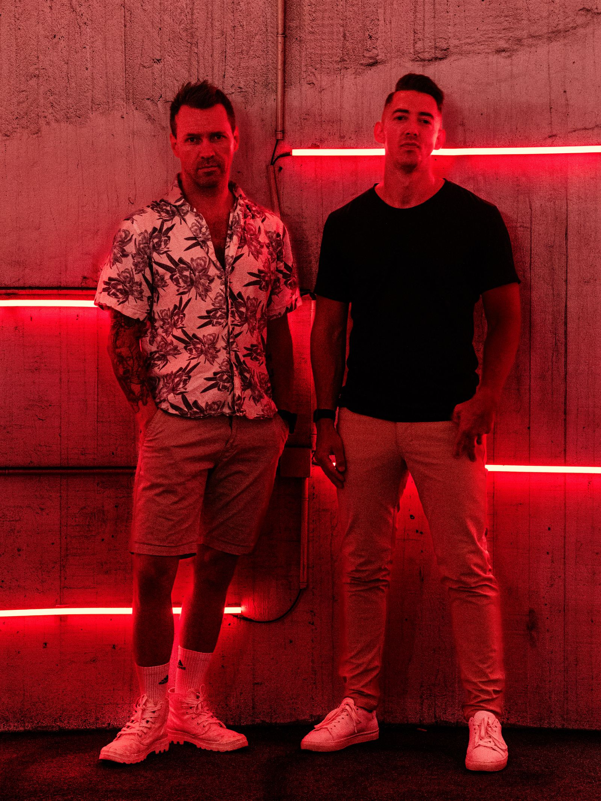
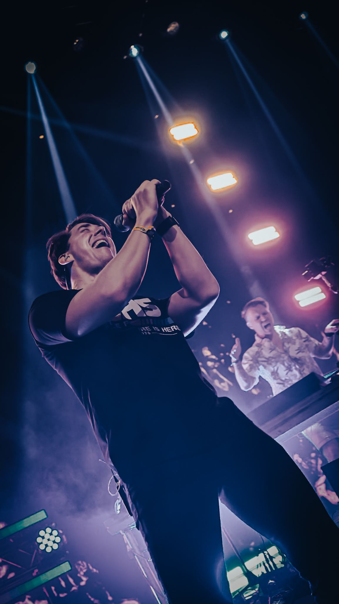
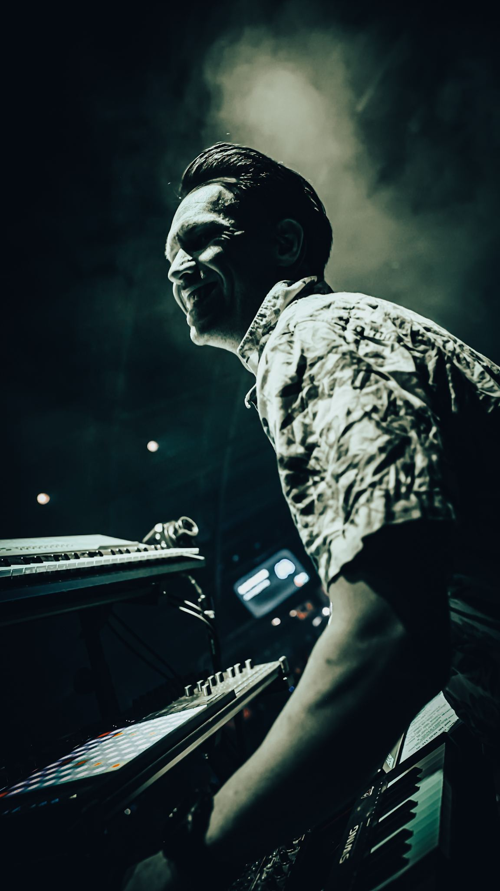

About Oslo Lights
Oslo Lights is a Scandinavian band formed in Oslo, Norway by Magnus Wolff and Robin Andersson.
They bonded over a mutual love for retro vibes and hard metal, and this wide inspiration results in what can be described as blends of hard pop synthwave.



